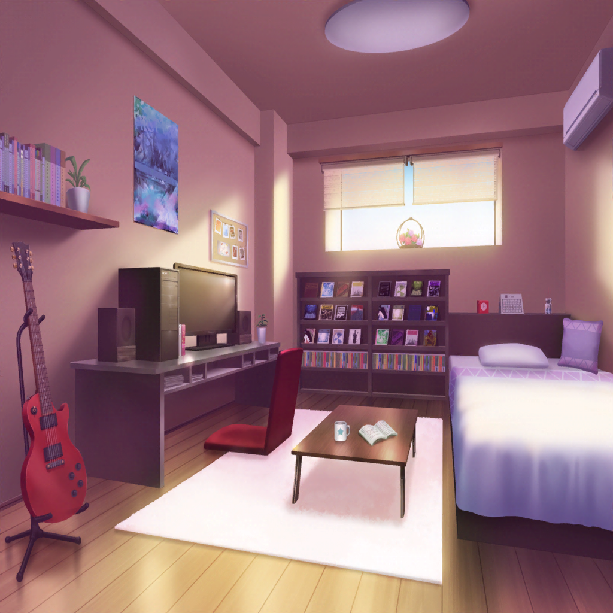
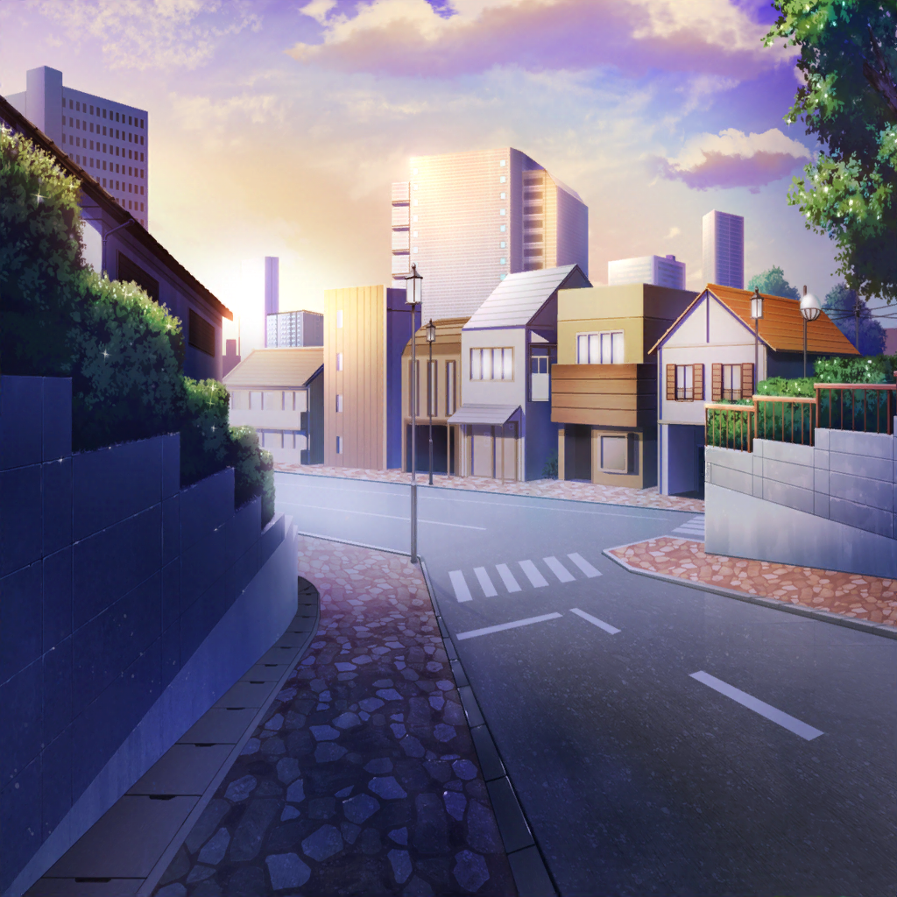
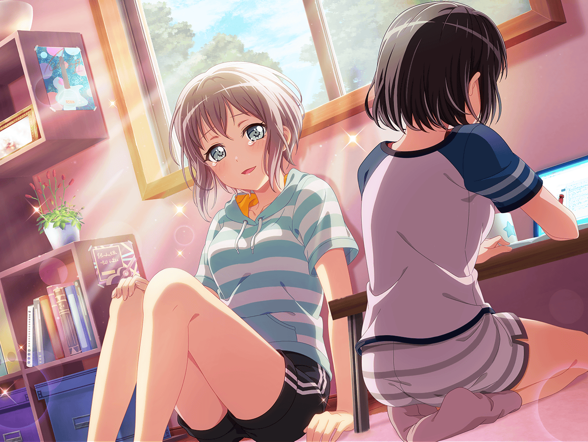

明け方
美竹家 蘭の部屋
ひまり
ふふっ、この時つぐが一番前で見よう！ って言ったんだよね。
みんなでずぶ濡れになっちゃってさ――
つぐみ
……
ひまり
ありゃ、つぐ、寝そうだね
つぐみ
……はっ！！ ご、ごめん……
モカ
ていうか、もう朝じゃん。
日が昇ってきてるよ
つぐみ
この時間まで起きてることって……ぜんぜん
ないから……ふわあ……
ひまり
ん〜〜〜〜！
たっくさん喋ったなあ〜〜
蘭
結局、話脱線しまくってたけどね
モカ
まあいーじゃん。たのしかったし
ひまり
ねえみんな、外出てみない？
朝日見たらちょっと頭スッキリするかも
つぐみ
うん、私もそうしたいかも……ふわあ

つぐみ
わあ……っ！！
ひまり
朝焼け……すっごくキレイ！！
モカ
これはエモいっすね〜
蘭
ホントだ……
ひまり
写真撮っとこーっと！
蘭
朝焼けと夕焼けって、似てるね。
……まあ、あたりまえかもしれないけど
巴
ちょうど今、同じこと思ってたよ。
ここから夜じゃなくて、朝になるのってなんか不思議だよな
蘭
ここから朝になって、昼がきて、夕焼けが出て……夜になる
モカ
夜がきたら、また朝焼けがでて、朝になる〜
巴
繋がってるんだな、全部
蘭
あたし達の『いつも通り』も、空と同じなのかもしれない
ひまり
空と……？ どういうこと？

蘭
さっき、新・いつも通りをみんなで出し合ったでしょ？
そしたら、案外いっぱいあって……
蘭
知らないうちにあたし達の『いつも通り』も
変わっててさ。それって、空が時間と共に少しずつ
変わっていくのに似てるなって思ったんだ
つぐみ
確かに！ 空と同じだね
蘭
あたし達の『いつも通り』は、日々ちょっとずつ変わってて。
今まではそれに気づけなくて、不安になったけど……
つぐみ
今は私達、同じ新しい『いつも通り』を見てるよね？
ひまり
うんっ！ そう思う。『いつも通り』は、日々変わっていくこと。
日々変わってく中で、変わっちゃいけない
『いつも通り』を守ること
ひまり
それが、私達がいつまでも一緒にいられるためにできること！
ね、これを歌詞にしようよ！
蘭
あたしもそう思ってたとこ。
新しい『いつも通り』をあたし達の中にずっと刻んで
おけるような歌詞……そんな歌詞にしたいね
ひまり
もう１つだけ私から提案なんだけど……私達にとっては
夕焼け以外の空も全部、大切なものになったでしょ？
だから……
ひまり
歌詞のなかに、変わってく空の色を入れてみたらどうかな？
朝日、とか夜空、とか。もちろん夕焼けも！
モカ
ひーちゃん、ナイスていあーん
蘭
空模様か……いいね、それ。
……うん。歌詞のイメージ、湧いてきたかも
ひまり
ほんと！？ やったあー！
私、歌詞のこととか、色々……すごく反省してたの。
だから、蘭の力になれてうれしい
モカ
蘭だけじゃないよー。これはあたし達の歌なんだから。
みーんなの力になったんだよ、ひーちゃんは
つぐみ
さすがリーダー、だね♪
ひまり
えへへ……そっか。うれしいな〜
蘭
朝焼け……ほんとにきれいだね。
夕焼けよりも空の色が淡くて
巴
……アタシはやっぱり、燃えるみたいな色の
夕焼けが一番好きだけどな〜
ひまり
ふふっ、巴！ 私だって夕焼けが一番好きだよっ。
みんなだってそう！
蘭
夕焼けが大切なのはこれから先、ずっと……
何があったって変わらないよ
蘭
それに、巴のその意地があれば、
あたし達はずっとAfterglowでいられるね
巴
うん……そうだな
モカ
……くしゅっ
つぐみ
モカちゃん、大丈夫？
朝方はさすがにちょっと、寒いよね
ひまり
そろそろ戻ろっか。戻ったら私、少し寝ようかな〜
蘭
あたしは歌詞、直してみようかな。
……みんなと一緒に考えるって言い出したの
あたしだけど……
巴
ここまできたらあとは蘭に任せるよ
蘭
ありがと。
いい歌詞にしてみせるから、楽しみにしてて
美竹家 蘭の部屋
蘭
……
モカ
はかどってますな〜
蘭
まあね。朝焼け効果かな
モカ
みんなで歌詞、作れてよかったね
蘭
……ほんとに、みんなには助けられてばっかだね
モカ
蘭てば〜、どうしちゃったの急に

蘭
別に。思ったこと言っただけ
モカ
（あたし達五人はきっと、これからもずっと一緒にいられる）
モカ
（けど……これからは隣を歩くんじゃなくて
背中を追いかけよう）
モカ
（せめてその背中は見失わないように。
届かなくならないように）
モカ
……
蘭
……モカ、どうしたの？
え、泣いてる？
モカ
んーん。あくび〜
モカ
ふわ〜……あたしもちょっと寝ようかな。
おやすみ〜